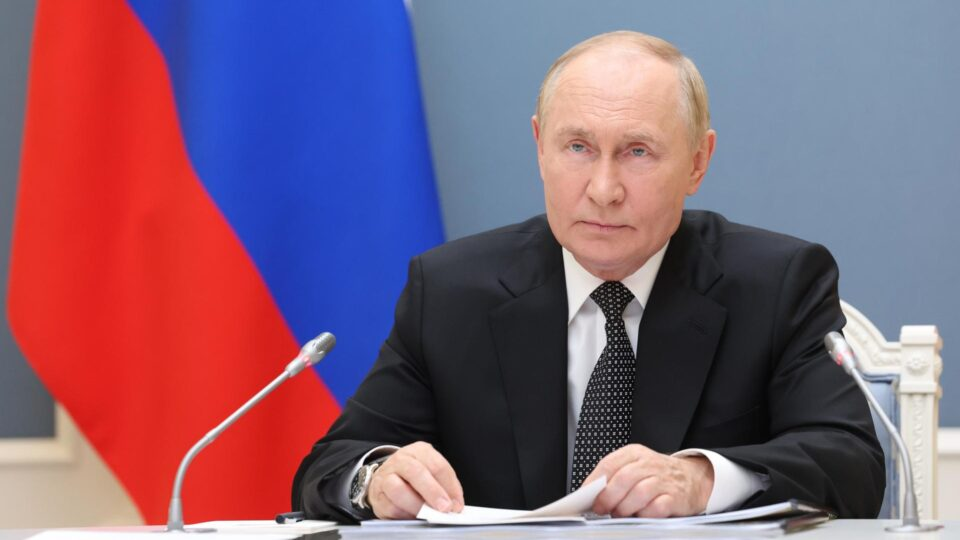

Home
Notícias
Sobre
História
ACONTECENDO AGORA

Otan confirma que soldados da Coreia do Norte foram à Rússia e lutarão contra Ucrânia
Volodymyr Zelensky também pediu resposta do Ocidente à 'escalada' no conflito em comunicado nesta sexta (25). Treinamento das tropas norte-coreanas está ocorrendo em cinco bases militares russas, segundo Inteligência ucraniana.
Principais da Semana
Ucrânia anuncia retirada de tropas de Vuhledar, considerada 'bastião de defesa' no leste do país
Rússia lucrou bilhões com grãos de áreas ocupadas na Ucrânia em quase três anos de guerra
Putin: Moscou responderá se Ocidente ajudar a Ucrânia a atacar com mísseis
Rússia confirma tomada de cidade de Vuhledar, no leste da Ucrânia
Ucrânia critica músico Jared Leto por elogiar "a energia russa"
Quase 600 crianças mortas em dois anos de guerra na Ucrânia
História
A Invasão Russa Sacode o Mundo
Mariupol Cercada: Um Símbolo da Resistência Ucraniana
Um Ano de Guerra: A Resistência Ucraniana Permanece Forte
Contraofensiva Ucraniana: Avanços na Frente Oriental
Negociações de Paz? Um Longo Caminho pela Frente
Dois Anos de Guerra: Um Conflito Prolongado e Desgastante
Apoio Militar Ocidental: Novos Equipamentos para a Ucrânia
Forças Russas conquistam mais territórios
Sobre
Brics: Lula critica guerra na Ucrânia diante de Putin | LIVE CNN
Os efeitos da guerra Rússia-Ucrânia no comércio global
Delegação brasileira chega à Rússia para cúpula dos Brics
Russia Ukraine War News LIVE
Putin vai abrir Cúpula anual do Brics na Rússia; Cristiano Beraldo analisa
Ukraine live cam from Kyiv, Odessa, Kharkiv, Donetsk, Dnipro...